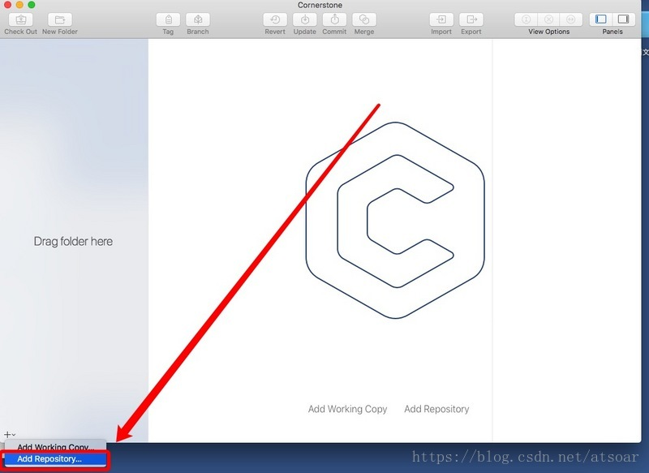

CornerStone使用教程
2021年4月3日
CornerStone 是 Mac 上一个比较流行的 SVN 客户端，本篇就给大家讲解下如何使用它
我们以国内最好的 SVN 平台 SVNBucket 作为 SVN 的服务端，讲解如何配置。
点击加号，选择Add Repository…

下图是填写具体的仓库信息
选择SVN Server
Tunnel：保持None
Server：填写我们的域名：svnbucket.com
Port：填写SVN的默认端口号：3690
Path：填写你的项目地址域名后面那部分：jubaisi/wxz（假设完整仓库地址是svn://svnbucket.com/jubaisi/wxz）
点击ADD就可以了。
ADD到CornerStone后你还要点击软件左上角的Check Out，这样才会把代码从服务器上检出。